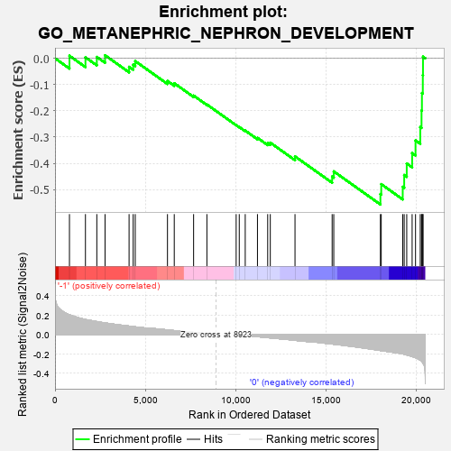
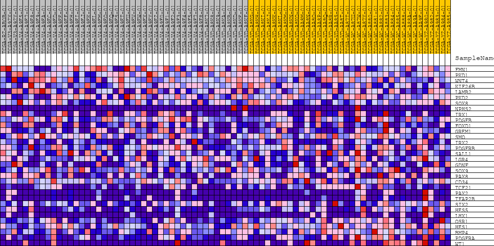
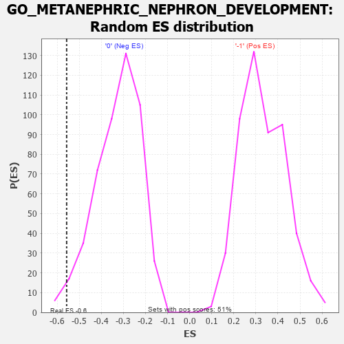

| | | Dataset | GSEAExpression.phenotype_uvm.cls#-1_versus_0 |
| Phenotype | phenotype_uvm.cls#-1_versus_0 |
| Upregulated in class | 0 |
| GeneSet | GO_METANEPHRIC_NEPHRON_DEVELOPMENT |
| Enrichment Score (ES) | -0.5569052 |
| Normalized Enrichment Score (NES) | -1.7040471 |
| Nominal p-value | 0.020408163 |
| FDR q-value | 1.0 |
| FWER p-Value | 0.961 |
Table: GSEA Results Summary

Fig 1: Enrichment plot: GO_METANEPHRIC_NEPHRON_DEVELOPMENT
Profile of the Running ES Score & Positions of GeneSet Members on the Rank Ordered List
| PROBE | DESCRIPTION
(from dataset) | GENE SYMBOL | GENE_TITLE | RANK IN GENE LIST | RANK METRIC SCORE | RUNNING ES | CORE ENRICHMENT | | 1 | FMN1 | na | | | 800 | 0.203 | 0.0098 | No |
| 2 | PKD1 | na | | | 1686 | 0.155 | 0.0038 | No |
| 3 | WNT4 | na | | | 2316 | 0.134 | 0.0052 | No |
| 4 | KIF26B | na | | | 2772 | 0.119 | 0.0116 | No |
| 5 | LAMB2 | na | | | 4104 | 0.087 | -0.0325 | No |
| 6 | PKD2 | na | | | 4331 | 0.082 | -0.0240 | No |
| 7 | SOX8 | na | | | 4446 | 0.079 | -0.0106 | No |
| 8 | NPHS2 | na | | | 6232 | 0.047 | -0.0864 | No |
| 9 | IRX1 | na | | | 6608 | 0.040 | -0.0950 | No |
| 10 | PDGFB | na | | | 7680 | 0.022 | -0.1421 | No |
| 11 | FOXD1 | na | | | 8416 | 0.009 | -0.1759 | No |
| 12 | GREM1 | na | | | 10038 | -0.002 | -0.2546 | No |
| 13 | SMO | na | | | 10210 | -0.005 | -0.2617 | No |
| 14 | IRX2 | na | | | 10541 | -0.011 | -0.2753 | No |
| 15 | PDGFRB | na | | | 11219 | -0.022 | -0.3030 | No |
| 16 | SALL1 | na | | | 11786 | -0.033 | -0.3228 | No |
| 17 | LGR4 | na | | | 11930 | -0.035 | -0.3213 | No |
| 18 | GDNF | na | | | 13299 | -0.060 | -0.3736 | No |
| 19 | SOX9 | na | | | 15357 | -0.098 | -0.4504 | No |
| 20 | PAX8 | na | | | 15447 | -0.100 | -0.4308 | No |
| 21 | CD34 | na | | | 18032 | -0.165 | -0.5172 | Yes |
| 22 | TCF21 | na | | | 18078 | -0.167 | -0.4794 | Yes |
| 23 | PAX2 | na | | | 19269 | -0.200 | -0.4895 | Yes |
| 24 | TFAP2B | na | | | 19350 | -0.204 | -0.4446 | Yes |
| 25 | SIX2 | na | | | 19491 | -0.211 | -0.4007 | Yes |
| 26 | HES5 | na | | | 19790 | -0.227 | -0.3609 | Yes |
| 27 | LHX1 | na | | | 19978 | -0.239 | -0.3128 | Yes |
| 28 | OSR1 | na | | | 20240 | -0.265 | -0.2618 | Yes |
| 29 | HES1 | na | | | 20311 | -0.276 | -0.1990 | Yes |
| 30 | BMP4 | na | | | 20333 | -0.282 | -0.1324 | Yes |
| 31 | PDGFRA | na | | | 20382 | -0.294 | -0.0643 | Yes |
| 32 | WT1 | na | | | 20392 | -0.296 | 0.0062 | Yes |
Table: GSEA details [plain text format]

Fig 2: GO_METANEPHRIC_NEPHRON_DEVELOPMENT
Blue-Pink O' Gram in the Space of the Analyzed GeneSet

Fig 3: GO_METANEPHRIC_NEPHRON_DEVELOPMENT: Random ES distribution
Gene set null distribution of ES for GO_METANEPHRIC_NEPHRON_DEVELOPMENT